About
Swagat Hai to Dash & Dine! > Food isn't just about ingredients; it’s about memories. From the khushbu of fresh tadka in my mother’s kitchen to the perfect sweetness of a syrup-soaked Gulab Jamun, I believe every dish tells a story.
I started Dash & Dine to bring "Dil se Dishes" to your table. Whether you are a beginner looking for quick 'minutes' meals or a food lover wanting to master authentic Desi classics, you’ll find it all here. Let’s celebrate the magic of Indian spices, one recipe at a time!
We bridge the gap between traditional heritage and modern convenience. Our mission is to preserve the "Shahi" flavors of Bharat while making them accessible for the contemporary kitchen.
Every recipe here is curated with precision, ensuring that the soul of the dish remains intact. Welcome to a premium culinary journey where tradition meets taste.We’ve stripped away the complexity of traditional recipes to give you clear, bold, and delicious results.
From street-style snacks to festive desserts, we focus on the flavors that matter. No fluff, just great food and the joy of cooking. Dive in, get messy, and let’s make something amazing today!


 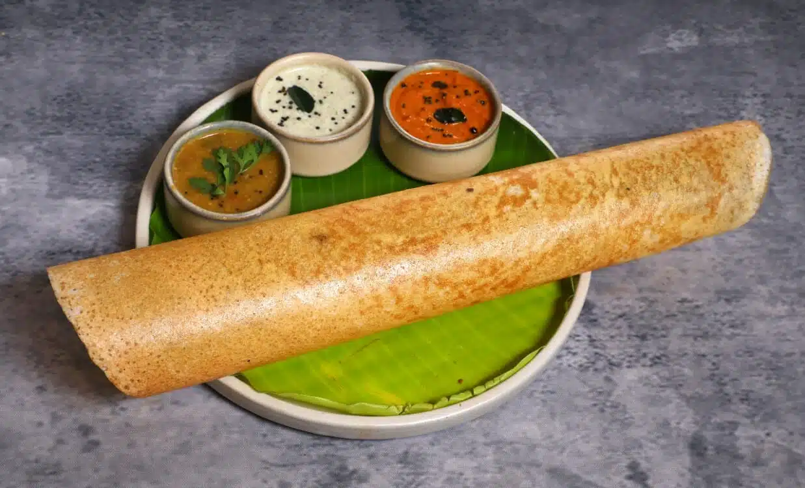
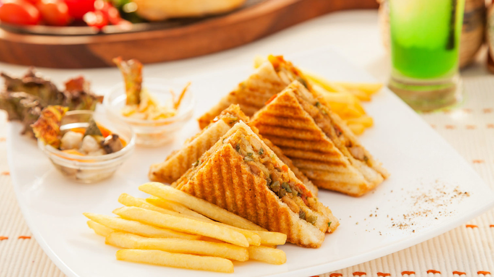
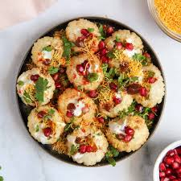
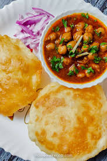
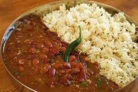
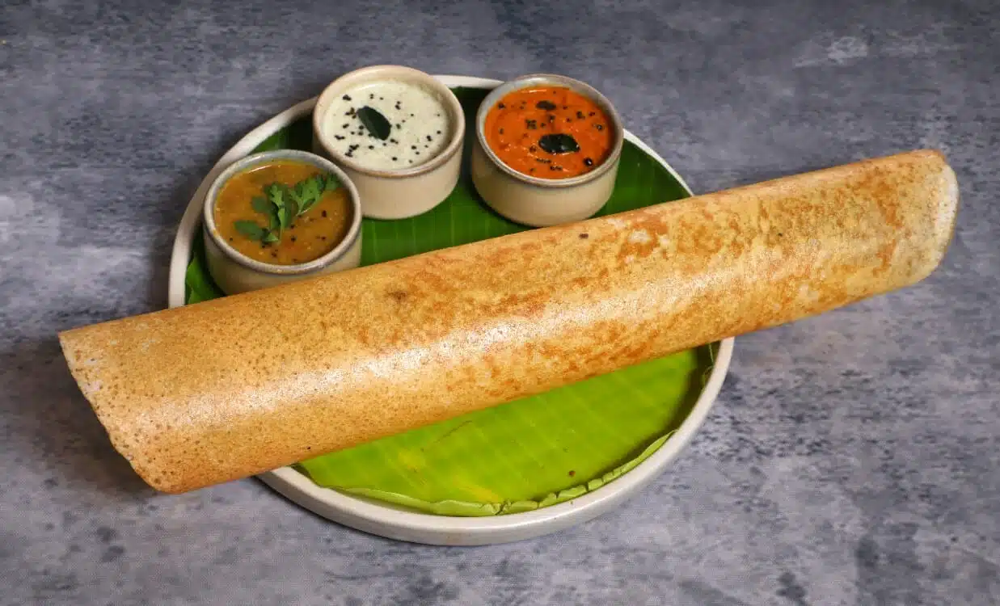
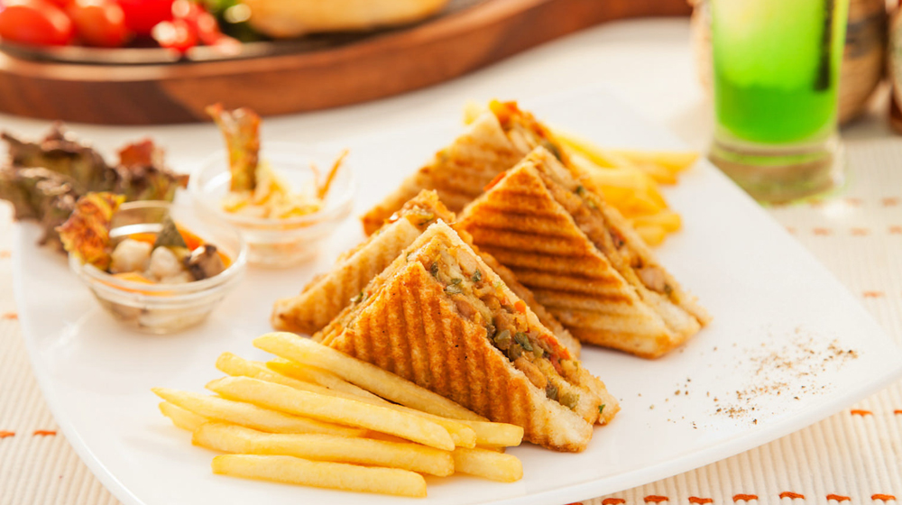
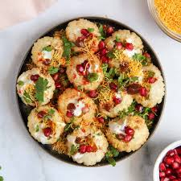
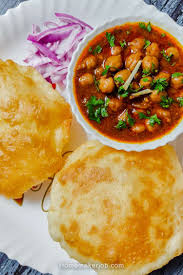
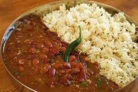
 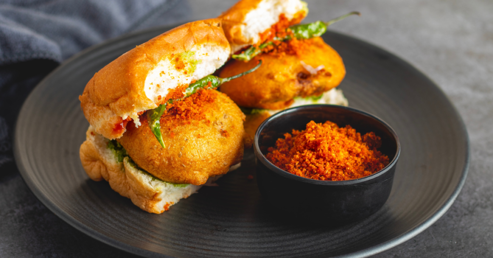
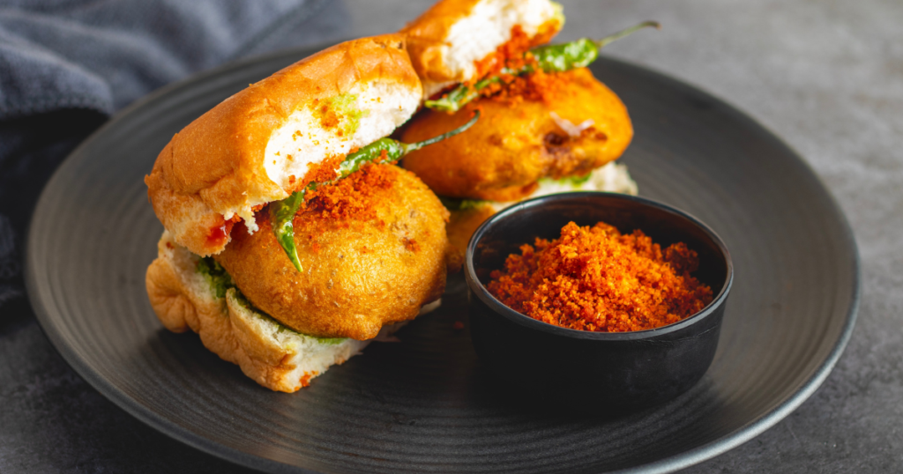